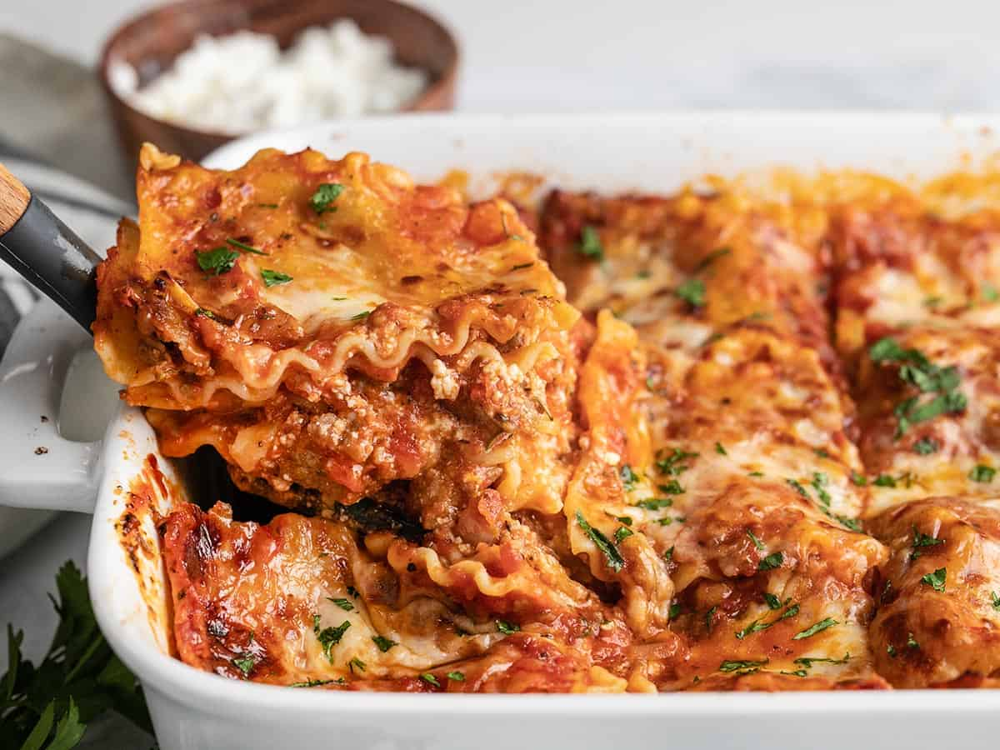

Homemade Lasagna

Description
Lasagna is a classic Italian dish made with layers of flat pasta sheets, rich meat or vegetable sauce, creamy ricotta or béchamel, and melted mozzarella cheese. The dish is often baked until bubbly and golden, creating a delightful combination of soft pasta, savory sauce, and gooey cheese with a slightly crispy top. The most popular version, lasagna al forno, features a hearty meat sauce made from ground beef or sausage, simmered in tomatoes and Italian herbs. Lasagna is a comforting, filling dish that's perfect for family meals or special occasions, offering a delicious blend of flavors in every bite.
Ingredients
12 lasagna noodles (cooked)
1 lb ground beef or Italian sausage
1 jar (24 oz) marinara sauce or homemade tomato sauce
2 cups ricotta cheese
2 cups shredded mozzarella cheese
1/2 cup grated Parmesan cheese
1 egg
Salt, pepper, and Italian seasoning, to taste
Optional: Fresh basil or parsley for garnish
Steps
- Cook the Meat: In a large pan, brown the ground beef or sausage over medium heat. Drain excess fat and add the marinara sauce. Simmer for 10-15 minutes, seasoning with salt, pepper, and Italian herbs.
- Prepare the Cheese Mixture: In a bowl, mix the ricotta cheese, 1 cup of mozzarella, Parmesan, egg, salt, and pepper. Set aside.
- Assemble the Lasagna: Preheat the oven to 375°F (190°C). In a baking dish, spread a layer of the meat sauce. Add a layer of cooked lasagna noodles, followed by a layer of the ricotta mixture. Repeat the layers until all ingredients are used, finishing with a layer of meat sauce and a generous topping of mozzarella cheese.
- Bake the Lasagna: Cover the dish with aluminum foil and bake for 25 minutes. Remove the foil and bake for an additional 15 minutes or until the cheese is bubbly and golden. Let it rest for 10 minutes before slicing and serving.